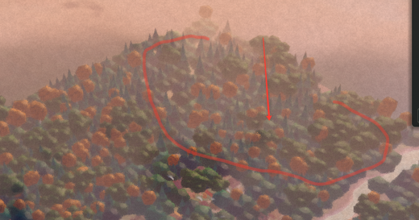

Болотное царство посреди северного леса. WASD — идти, Shift — бег, стрелки — чуть повернуть камеру, 1–0 — ракурсы, L — Леший выходит из дуба. Мышь камерой не управляет.
Ракурс
Тема света
Сейчас: обычный лес. В «Авто» тема меняется, когда богатырь входит в ельник у болота.
Действия
Место на карте

Лес на северном краю карты, за деревней, левее реки.
Болото ~108×92 м, ельник вокруг ~350 м.
Дуб-терем: ствол 30 м, у земли ~18 м в обхвате корней, корни-ответвления и воздушные корни, плющ и листва, 4 галереи, винтовая лестница до 25 м (по ней можно подняться).
Хоромы и 9 изб на сваях 1,4–1,5 м, двери 1,95 м (богатырь 1,53 м, Леший 2,5 м). На крыльцо можно подняться.
Свет: оранжевый — костёр, окна, факелы; зелёный — дуб; голубой — грибы, огоньки, свечение воды. Лучи сквозь ветви и из окон, ореолы у фонарей, дым клубами.